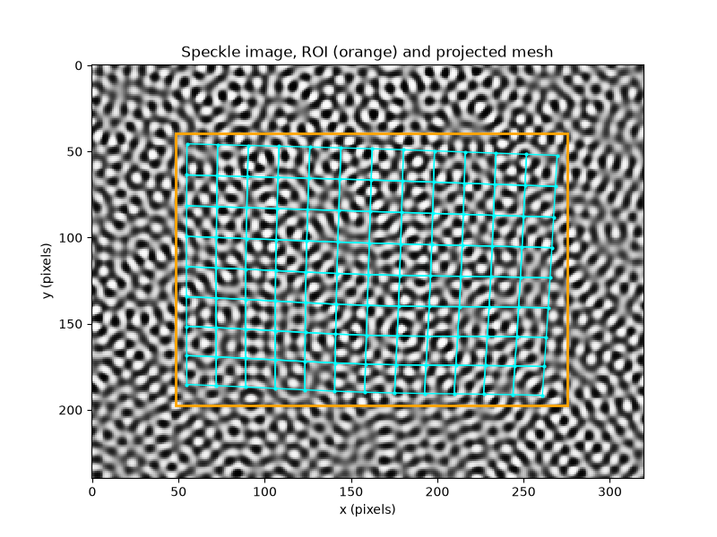
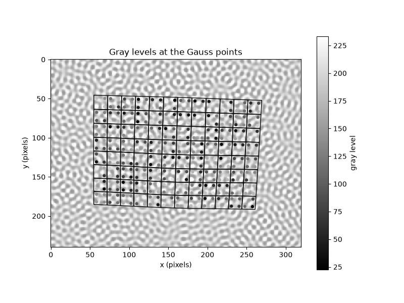
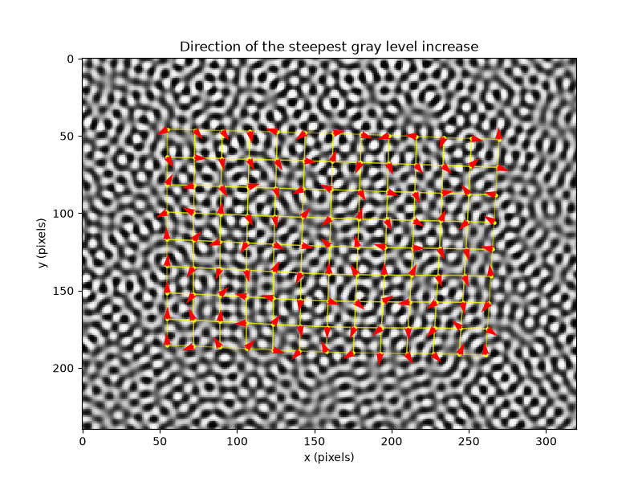
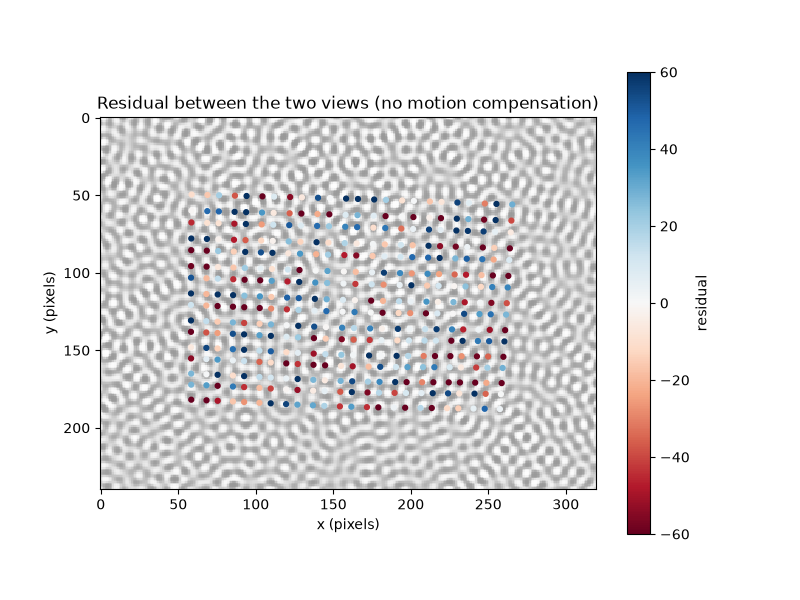
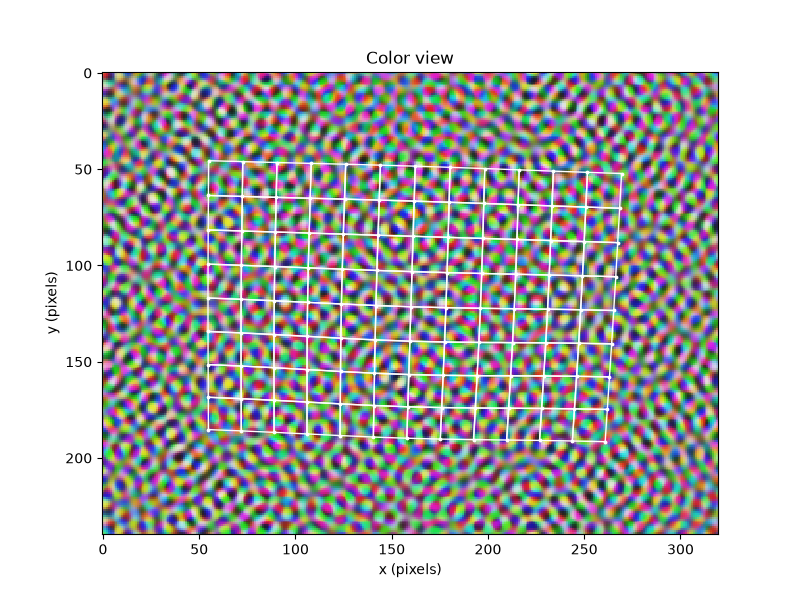

Note
Go to the end to download the full example code.
Gray levels of a view#
A pysdic.View associates a pysdic.Camera with an pysdic.Image.
pysdic.View.image_project() projects world points on the sensor and interpolates the
image at the projected points. The Jacobians are obtained by the chain rule:
This is the core operation of the SDIC: the gray levels of the material points of a mesh are compared between several views.
A camera and a speckle image#
The camera looks at the plane \(z = 0\) from 5 units above. The image is a synthetic
speckle pattern (see pysdic.compute_wave_speckle()) evaluated at the pixels, with a
wavelength of 8 pixels, and quantized on 8 bits.
import numpy
from pysdic import Camera, Image, PerspectiveExtrinsic, PinholeIntrinsic, compute_wave_speckle, quantize_image
sensor_height, sensor_width = 240, 320
camera = Camera(
sensor_height,
sensor_width,
extrinsic=PerspectiveExtrinsic.from_rt(rvec=[numpy.pi + 0.1, 0.05, 0.0], tvec=[0.0, 0.0, 5.0]),
intrinsic=PinholeIntrinsic.from_matrix([[350.0, 0.0, 160.0], [0.0, 350.0, 120.0], [0.0, 0.0, 1.0]]),
)
x, y = numpy.meshgrid(numpy.arange(sensor_width), numpy.arange(sensor_height))
pixels = numpy.stack((x, y), axis=-1).astype(numpy.float64) # (H, W, 2) image points
image_data = quantize_image(compute_wave_speckle(pixels, wavelength=8.0), bit_depth=8) # uint8 (H, W)
The image is interpolated only in its region of interest (ROI), here the zone of the
projected mesh with a margin of 5 pixels (see pysdic.compute_projected_roi()). The
points projected out of the ROI get the default_value of the image (NaN by default).
from pysdic import compute_projected_roi, create_3d_quadrangle_4_heightmap
mesh = create_3d_quadrangle_4_heightmap(
lambda x, y: 0.2 * numpy.exp(-(x**2 + y**2)),
x_bounds=(-1.5, 1.5),
y_bounds=(-1.0, 1.0),
n_x=13,
n_y=9,
)
roi = compute_projected_roi(mesh, camera, margin=5) # (x, y, width, height)
image = Image.from_array(image_data, roi=roi)
print(image)
Image(shape=(240, 320), dtype=uint8, is_color=False, roi=(49, 40, 227, 158))
The view and the projection of a mesh#
An pysdic.ImagePlotter built from a view draws its image with add_image()
and the ROI of this image with add_roi(), and projects the 3D objects with its camera.
from pysdic import ImagePlotter, View
view = View(camera, image)
plotter = ImagePlotter(view)
plotter.add_image()
plotter.add_roi()
plotter.add_mesh(mesh, show_faces=False, edge_color="cyan", vertex_color="cyan", vertex_size=4)
plotter.set_title("Speckle image, ROI (orange) and projected mesh")
plotter.show()

Gray levels at the vertices and at integration points#
pysdic.View.image_project() returns an pysdic.ImageProjectionResult. The
gray levels always have a channel axis: shape \((N_p, C)\), with \(C = 1\) for a
grayscale image.
result = view.image_project(mesh)
print(f"Gray levels at the vertices: shape {result.gray_levels.shape}")
from pysdic import IntegrationPoints
integration_points = IntegrationPoints.from_gauss_points(mesh.element_type, mesh.n_elements)
points = mesh.compute_integration_points_coordinates(integration_points) # PointCloud in the world
integration_points["gray"] = view.image_project(points).gray_levels[:, 0]
plotter = ImagePlotter(view)
plotter.add_image(opacity=0.4)
plotter.add_mesh(mesh, show_faces=False, show_vertices=False, edge_color="black")
plotter.add_integration_points(
integration_points, mesh, property="gray", property_cmap="gray", size=12, show_bar=True, bar={"label": "gray level"}
)
plotter.set_title("Gray levels at the Gauss points")
plotter.show()

Gray levels at the vertices: shape (117, 1)
A point inside the sensor but out of the ROI gets NaN:
out_point = numpy.array([[2.0, 0.0, 0.0]])
print(f"Image point {camera.project(out_point).image_points[0]}, "
f"gray level {view.image_project(out_point).gray_levels[0]}")
Image point [299.84710712 124.3043074 ], gray level [nan]
Jacobians of the gray levels#
The Jacobians with respect to the world points have shape \((N_p, C, E)\), and with
respect to the parameters of the camera \((N_p, C, N_e + N_d + N_i)\) (blocks
jacobian_dextrinsic, jacobian_ddistortion, jacobian_dintrinsic). They are
checked here with finite differences on the extrinsic parameters.
result = view.image_project(mesh, dx=True, dextrinsic=True)
print(f"jacobian_dx: {result.jacobian_dx.shape}, jacobian_dextrinsic: {result.jacobian_dextrinsic.shape}")
parameters = camera.parameters.copy()
step = 1e-6
finite_differences = numpy.empty_like(result.jacobian_dextrinsic)
for k in range(camera.extrinsic.n_parameters): # The extrinsic parameters come first
delta = numpy.zeros_like(parameters)
delta[k] = step
camera.parameters = parameters + delta
plus = view.image_project(mesh).gray_levels
camera.parameters = parameters - delta
minus = view.image_project(mesh).gray_levels
finite_differences[..., k] = (plus - minus) / (2 * step)
camera.parameters = parameters # Restore the parameters
error = numpy.abs(finite_differences - result.jacobian_dextrinsic).max()
print(f"Maximum difference with finite differences: {error:.2e} "
f"(Jacobian values up to {numpy.abs(result.jacobian_dextrinsic).max():.1f})")
jacobian_dx: (117, 1, 3), jacobian_dextrinsic: (117, 1, 6)
Maximum difference with finite differences: 2.01e-05 (Jacobian values up to 9567.8)
The world displacement of steepest gray level increase is \(\nabla_X I\). Its image \(J_x \nabla_X I\), with \(J_x\) the Jacobian of the projection, is drawn below.
projection = camera.project(mesh, dx=True)
world_gradient = result.jacobian_dx[:, 0, :] # (N_v, 3)
image_direction = numpy.einsum("nij,nj->ni", projection.jacobian_dx, world_gradient) # (N_v, 2)
image_direction /= numpy.linalg.norm(image_direction, axis=1, keepdims=True)
plotter = ImagePlotter(view)
plotter.add_image()
plotter.add_mesh(mesh, show_faces=False, vertex_color="yellow", edge_color="yellow", edge_opacity=0.5,
vertex_vectors=image_direction, vector_scale=8.0, vector_color="red")
plotter.set_title("Direction of the steepest gray level increase")
plotter.show()

Several views sharing a camera#
Several views can share the same camera (the same sensor at different times). Here the second image is the same speckle pattern shifted by exactly 1.5 pixels along \(x\), as if the mesh had moved. The residual between the two views at the same material points is the quantity minimized by the SDIC.
shifted_data = quantize_image(compute_wave_speckle(pixels - [1.5, 0.0], wavelength=8.0), bit_depth=8)
view_t1 = View(camera, Image.from_array(shifted_data, roi=roi))
print(f"Shared camera: {view.camera is view_t1.camera}")
gray_t0 = view.image_project(points).gray_levels[:, 0]
gray_t1 = view_t1.image_project(points).gray_levels[:, 0]
integration_points["residual"] = gray_t1 - gray_t0
print(f"RMS residual without motion compensation: {numpy.sqrt(numpy.mean(integration_points['residual'] ** 2)):.1f}")
# With the motion: the material points are seen 1.5 pixels further along x
(gray_t1_moved,) = view_t1.image.evaluate_at_image_points(camera.project(points).image_points + [1.5, 0.0])
print(f"RMS residual with motion compensation: {numpy.sqrt(numpy.mean((gray_t1_moved - gray_t0) ** 2)):.2f}")
plotter = ImagePlotter(view_t1)
plotter.add_image(opacity=0.4)
plotter.add_integration_points(
integration_points, mesh, property="residual", property_cmap="RdBu", property_clim=(-60, 60),
size=12, show_bar=True, bar={"label": "residual"},
)
plotter.set_title("Residual between the two views (no motion compensation)")
plotter.show()

Shared camera: True
RMS residual without motion compensation: 50.0
RMS residual with motion compensation: 0.95
Color images#
For a color image, the gray levels have shape \((N_p, C)\) and their Jacobian \((N_p, C, E)\), with \(C = 3\).
color_data = numpy.stack((image_data, image_data[::-1, :], image_data[:, ::-1]), axis=-1) # (H, W, 3)
color_view = View(camera, Image.from_array(color_data, roi=roi))
color_result = color_view.image_project(mesh, dx=True)
print(f"Color gray levels: {color_result.gray_levels.shape}, jacobian_dx: {color_result.jacobian_dx.shape}")
plotter = ImagePlotter(color_view)
plotter.add_image(bgr=False) # RGB data, not read by OpenCV
plotter.add_mesh(mesh, show_faces=False, edge_color="white", vertex_color="white", vertex_size=3)
plotter.set_title("Color view")
plotter.show()

Color gray levels: (117, 3), jacobian_dx: (117, 3, 3)
Total running time of the script: (0 minutes 0.522 seconds)